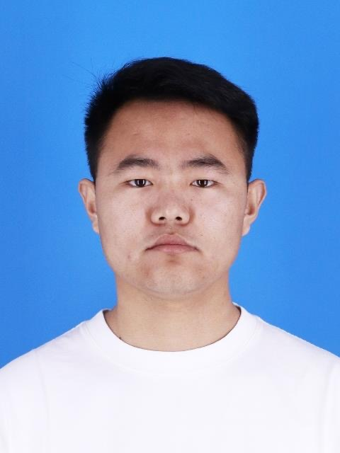

赵志鹏
全日制博士在读所在学院：计算机科学与技术学院籍贯：山东省 莒县人 政治面貌：共青团员
地址：山东省青岛市黄岛区三沙路1299号 |
 |

教育背景
- 教育经历：
2015.09~2019.06 青岛大学 机电工程学院 测控技术与仪器专业 本科学习
2020.08~2023.06 中国海洋大学 信息科学与工程学部 计算机应用技术专业 硕士学习
2023.08~至今 中国海洋大学 信息科学与工程学部 人工智能专业 博士学习
获奖荣誉
- 2021.07 第七届“互联网+”大学生创新创业大赛 一等奖 校级
- 2021.10 “建行杯”第七届山东省“互联网+”大学生创新创业大赛 铜奖 省级
研究方向
-
多模态大型语言模型
-
视频理解
-
多目标跟踪
-
医学图像分割
-
慢性病预测
-
声乐分离
-
智能合约与NFT
研究项目
-
主要承担“海川建筑物碳排放计算软件研发”，横向课题
2024.01~2024.03，在研
-
主要参与“数据驱动的家电产品精益拆解与循环协同”， 国家重点研发计划
2022YFB3305803，2022.10~2025.10，在研
-
主要参与“多业务多网络融合通信调度关键技术研究与综合指挥应急调度系统实现”，国家重点研发计划
2017YFC0806205，2017.7~2020.6，已结题
-
主要参与“基于5G面向基站的物联网能耗控制器”，横向课题
2022.12~2024.12，在研
-
主要参与“医疗大数据应用“，横向课题
2016.1~2018.12，已结题
学术论文
-
Zhao Zhipeng, He Jiawen, Tang Ruichun, Liu Peishun, Zhao Youwei.
SIN OC_SORT: MULTI-OBJECT TRACKING BY RE-CORRECT THE EQUATIONS OF MOTION[C].
The 6th International Conference on Machine Learning and Machine Intelligence (MLMI 2023).
-
Zhao Zhipeng, Zhang Jianjun, Liu Peishun, Liu Hanqing, Chen Yixin, Li Charles, Liu Xianchang, Tang Ruichun.
Semi-supervised 3D medical image segmentation using Transformer and CNN[C].
The 15th International Conference on Digital Image Processing (ICDIP 2023). SPIE, 2023.(EI：20235115251218)
-
Jianjun Zhang, Zhao Zhipeng, Yixin Chen, Hanqing Liu.
Multi-Decoder Networks for Semi-Supervised Medical Image Segmentation[C].
The 15th International Conference on Digital Image Processing (ICDIP 2023). SPIE, 2023.(EI：20235115251210)
-
Chen Yixin, Zhang Jianjun, Zong Xulin, Zhao Zhipeng, Liu Hanqing, Tang Ruichun, Liu Peishun, Wang Jinyu.
FSC-UNet: a lightweight medical image segmentation algorithm fused with skip connections[C].
Fourteenth International Conference on Digital Image Processing (ICDIP 2022). SPIE, 2022, 12342: 408-416.(EI:20224613131363)
-
Liu Hanqing, Zhao Zhipeng, Tang Ruichun, Liu Peishun, Chenyixin, Zhang Jianjun, Jia Jing.
PDNet: an advanced architecture for polyp image segmentation[C].
Fourteenth International Conference on Digital Image Processing (ICDIP 2022). SPIE, 2022, 12342: 434-442.(EI:20224613131366)
开发项目
-
基于智能合约与K歌的系统开发
2023启动，开发中
-
基于P2P的无服务器架构音视频通信安卓系统开发
2020启动，已完成
-
易货贸易系统安卓端开发（ebarter）
2020启动，已完成
-
面向水果销售的安卓端开发（realyfresh）
2020启动